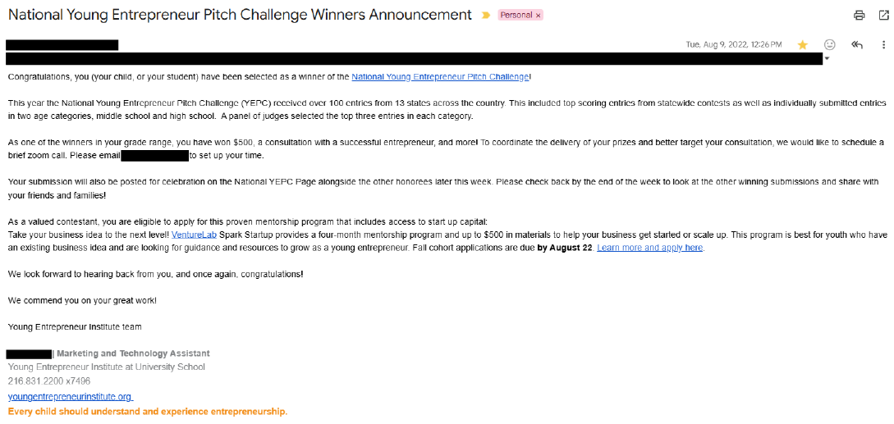

My mother lovingly calls me a “computer nerd ballerina.” I willingly embrace that title, as demonstrated by the previous essays. To take that a step further, I unabashedly agree with people when they call me a nerd, as I take that as a compliment. I know that most people would consider that as an insult, but I don’t. To me, someone deeply curious and eager to share their knowledge gains the loving title of nerd. I know a fair bit more about computer science than most of my classmates, and I am excited to share what I have learned with others and see what I can learn from them. My friends from ballet often react with surprise when I tell them about my interests and achievements in computer science and other fields. Typically, academics get shoved to the side in a dancer’s priorities, so it is surprising when someone excels in both areas. That doesn’t stop me from sharing every side of myself in any setting.
As part of my journey to become a ballerina and eventually to study computer science, I had to learn how to take corrections. Earlier in my ballet training, I struggled with accepting corrections from my teacher and applying them to make myself better. Every time I received a correction, I really didn’t like it. I thought that I didn’t need them to improve, and that I was receiving those corrections because my teachers didn’t like me and wanted to put me down. However, I eventually learned that those corrections were coming from a place of love, because my teachers knew these corrections would help me grow. I learned to love, accept, and apply corrections to my dancing, but not to my own personal image. If I don’t receive a correction in class, I get a little worried. I strive to be aware of myself as well and give myself my own corrections. This allows me to take corrections and feedback from my academic teachers as well. This improves me in all areas, like writing, coding, and design.
Another unique quality I bring to the table comes from my drive to improve and succeed. From a young age, I have always wanted to refine all of my skills. Whether that includes reading, ballet technique and performance, calculation, writing, creative crafting, soft skills, or computer skills, I constantly look to test the boundaries of my knowledge, find holes, and fill in those holes. I strive to perform to the best of my ability in school, at home, in dance, and in my own personal endeavors. I do everything that I can to understand and correct my mistakes, using resources like teachers, friends, and trusted internet sources.
Every experience in my life builds my unique skills. I proudly identify as a “computer nerd ballerina,” always seeking to improve in every area of my life. I hope to use both passions to serve others and inspire others who also feel pulled to both the creative and technical worlds.
My involvement in the Computer Technology category of the Sterling Scholar Awards will enrich my life by continually challenging and sharpening my mind. I plan to pursue computer science for my career. Not only will it benefit me by keeping me fed, clothed, and housed, but it will also continue to train my brain to solve problems, think creatively, and push the limits of my abilities each day.
Computer science mirrors the discipline I developed through ballet. Both require patience, repetition, and resilience when progress feels slow. The discipline required in both CS and ballet forces me to learn patience with myself and others and perseverance with the task at hand. CS teaches precision through the exactness of language and timing, and from ballet, by the constant search for perfect technique. Each iteration of choreography and performance, and of code, undergoes constant revision to attain as close as I, as a learning, growing human, can, to perfection. Even failing repeatedly to center a div in a website, or falling out of a turn, pushes me to learn and improve.
Computer science constantly evolves, forcing me to grow and adapt alongside it. This will keep me on my toes in a way that ballet does not. As the field advances, my brain will develop and strengthen, encouraging me to continually test my abilities. I hope to work at the forefront of new technologies, especially in web development and artificial intelligence. I want to find ways to bring greater ethical responsibility and safety into the field while still exploring the full potential of this extraordinary innovation. That process will take some time, as many nuances remain unresolved and more voices still need to be heard. Listening to those voices and opinions will further enrich my life by deepening my understanding of how AI intersects with humanity.
Through computer science, I will also have the opportunity to meet and connect with many different people from diverse backgrounds and places. These connections will open new worlds for me and expand my understanding. The collaboration inherent to this field may also lead to lifelong friendships built through shared problem-solving and creativity.
Although I can see all the benefits of pursuing this field, it won't be easy. As a female going into a male-dominated field, I will constantly deal with feelings of imposter syndrome. Thoughts of “I’m not good enough” and “They know so much more than I do, how will I ever keep up?” will plague me if I do not carefully watch my mentality. However, as I advance through my degree and career, I will learn how to control those thoughts and combat them with confidence, curiosity, and a commitment to close any gaps in my knowledge. Computer science will fully enrich me in all areas of my future life that no other path, even ballet, can. Through my enrichment, I hope to show others the power of CS to combine creativity with functionality by creating tools and projects through code.
This is a competition where every season students submit Shark Tank type videos on a product or service that they would like to invent. Three winners are selected from each age category each season. I won in 2022 in the Middle School division.

Created by Paige Gurney
Derived from © 2018 DevCamp | All rights reserved